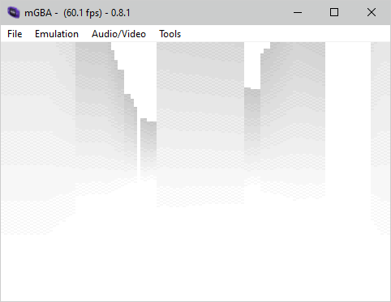
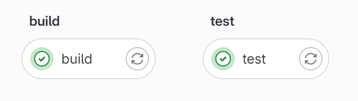

Automated benchmarking in GameBoy Advance homebrew
The GBA is a delightful platform to develop for. It is straightforward enough to understand thoroughly – a single 32-bit CPU, no OS, no built-in wireless features – but also sufficiently advanced to allow an ergonomic workflow based on modern languages and tools like C++20 and CMake (or Rust). Still, it is not particularly powerful in terms of raw computation and when writing rendering code, even a simple ray-caster, some way of benchmarking the performance is essentially a must.

It is, of course, possible to add FPS (or better, cycle) counters on the screen and check them after every code change, but we seek a more rigorous approach. It should be completely automatic, so that it is trivial to execute both locally and in a CI pipeline.
Here is the rough idea:
- Implement benchmarking in the game, using hardware resources built into the GBA. In my project I am using the TONC library which provides rudimentary cycle counting using GBA Timers 2 & 3 in a cascade mode.
- (optional) Record a sequence of inputs to replay during the benchmark, to move around the scene and get more statistically relevant results.
- Execute a GBA emulator in headless mode (no GUI) and have it output the measured performance metrics.
- Capture this output for further processing.
This leaves me with 2 problems to solve: find a cycle-accurate emulator that can run headless and somehow exfiltrate the measurements from the emulated console.
It turns out that the GBA’s SIO peripheral supports an UART mode, which in essence means very simple character output. Perfect, now just to find an emulator that can forward the UART to the host operating system.
mGBA
As of writing, mGBA is the only GBA emulator “confidently recommended” by the Emulation General Wiki. Not to imply that this is somehow the authoritative source on all things emulation, but I have gotten good advice from it in the past. mGBA is being actively developed and it’s technical blog provides some excellent reading. Does it fit the bill, though?
mGBA implements Lua scripting support that allows to introspect the emulated system rather deeply. Unfortunately, it does not implement UART mode. However, there is an alternative – albeit non-standard – way to get stuff out of the emulator. This mechanism consists of several I/O registers in the 0x04FFxxxx address space of the emulated system. Through these registers, the ROM has access to the emulator’s own logging facilities.
mGBA comes with example code for using these, assuming a libgba runtime.
As mentioned earlier, my project is based on TONC;
fortunately, porting the example code is trivial – in mgba.c,
#include <gba_types.h> just needs to be changed to #include <tonc_types.h>.
Next, I was looking for a way to run mGBA headless and for a limited duration. At first it looked like some level of source code hackery would be necessary, but then I discovered one of the built-in test utilities, mgba-rom-test. It can execute a ROM, without any user interface, and while it cannot be told to quit after a fixed interval of time (like mgba-perf can), it can exit once the game calls an SWI specified by the user.
Calls a what? SWI (software interrupt) instructions are normally used to invoke
functions built into the GBA BIOS;
we can therefore either re-purpose a function that would never be used during the benchmark,
or find an unallocated SWI number to claim for our purposes.
In absence of convincing reasons for either option, I went with the former, appropriating
the Stop call (swi 0x03).
Putting it together
A minimal, but complete example then looks like this:
#include <tonc.h>
#include "mgba/mgba.h"
int main(void) {
int i;
mgba_open();
profile_start();
// waste some time
for (i = 1; i <= 10; i++) {
Div(i, i);
}
uint duration = profile_stop();
mgba_printf(MGBA_LOG_INFO, "BENCHMARK: %d cycles", duration);
Stop();
}
The mgba-rom-test executable is not distributed with mGBA releases, in fact, it is not even compiled by default. We will need to build mGBA from source with some custom flags. Since we don’t care about GUI or fancy features, we can use additional options to minimize the build time and dependencies. The following configuration worked well for me:
$ cmake -DBUILD_QT=OFF \
-DBUILD_ROM_TEST=ON \ <-- secret sauce
-DBUILD_SDL=OFF \
-DUSE_EDITLINE=OFF \
-DUSE_ELF=OFF \
-DUSE_EPOXY=OFF \
-DUSE_FFMPEG=OFF \
-DUSE_LIBZIP=OFF \
-DUSE_USE_MINIZIP=OFF \
-DUSE_PNG=OFF \
-DUSE_SQLITE3=OFF \
-DUSE_ZLIB=OFF \
-G Ninja ..
$ ninja mgba-rom-test
If everything goes well, we run it like this:
$ ./test/mgba-rom-test -S 0x03 --log-level 15 /path/to/ROM.gba
GBA Debug: BENCHMARK: 1751 cycles
--log-level is a bit field whose documentation leaves it rather mysterious, but it seems
to correspond to enum mLogLevel in the code base.
A value of 15, or 0x0F, then corresponds to all levels from FATAL down to INFO, but excluding
DEBUG and lower.
Without the flag, mGBA’s implementation of the GBA BIOS emits a message every time a BIOS
function is used, which can be annoying.
Multiple scenarios
At the beginning I alluded to recording inputs for later playback. It doesn’t seem to be implemented as a native feature of mGBA at this time, so let’s come back to this topic in the future.
Let’s start with a presumably easier problem, which is how to select one out of multiple test scenarios to execute. There exists a trivial solution which is to use compile-time flags and build a number of different ROMs, one per scenario. That feels rather wasteful, and a potential nightmare to manage as the number of tests cases goes up. Can we, instead, bake everything into a single ROM and make the choice at runtime?
Having previously solve the problem of extracting data from mGBA, let’s now look at the ways to inject data at the start. A cursory glance reveals a number of entry vectors:
- the ROM file itself
- the built-in command-line debugger (
-d) - the built-in GDB (
-g) - IPS patches (
-p) - Lua scripts
- save states (
-t) - cheat codes (
-c)
Some of these are out – for example, the scripting engine is not accessible in mgba-rom-test.
Patching a fixed address inside the ROM is always an option, but let’s look for something more
elegant.
Save states are very powerful, but they use a proprietary binary format, which might even
change between versions of the emulator.
What about cheat codes? They operate on the principle of hooking the game code and allowing pretty much arbitrary memory modifications. That sounds interesting, to say the least!
Of course, things cannot be too simple. The cheat devices for the GBA are a mess, with the most famous ones (Action Replay and GameShark Advance) encrypting their codes. While the encryption has been broken open years ago, it would be preferable to avoid such a complication altogether. There is Codebreaker, where encryption is optional. Finally, mGBA supports a “VBA” cheat file format (presumably pioneered by VisualBoyAdvance), which is the most straightforward of all: it’s just a list of address-value pairs.
In order to do their dirty work, the classic cheat devices work by hooking the game code and hijacking a suitable branch instruction, whose address is encoded as part of the cheat “master code”. With VBA cheats, this is not necessary; the memory modifications are applied at the end of each emulated frame. This has the downside that the game has to wait for one frame to pass before checking the memory location (~5 extra lines of code including clean-up). It still seems like a better trade-off than having to look for a Thumb branch instruction that is on the main code path and guaranteed to be stable across builds.
Having sorted out the mechanism, we still need a place to put our magic cookie. For a proof of concept, let’s just put it at the very end of EWRAM, which spans the 256 KiB from 0x0200 0000 to 0x0203 FFFF. The linker script should ideally be adjusted to make sure that the compiler will not interfere with our chosen special location.
The cheat file itself then boils down to a single line:
0203FFFE:beef
And reading the value from inside is straightforward, too:
// wait for 1 frame to pass
irq_init(NULL);
irq_enable(II_VBLANK);
VBlankIntrWait();
mgba_printf(MGBA_LOG_INFO, "Requested test case: %04Xh", *(u16*)0x0203FFFE);
Let’s see it in action:
$ ./test/mgba-rom-test -S 0x03 --cheats cheatfile.txt --log-level 15 /path/to/ROM.gba
GBA Debug: Requested test case: BEEFh
GBA Debug: BENCHMARK: 1751 cycles
GitLab CI

We can now take it one step further, and have the benchmark run automatically in a CI pipeline. It makes sense to separate the ROM build step from the benchmarking step, since the former needs the GBA toolchain to build, while the latter builds mGBA for the host platform (or whatever container image we run it in), before executing the test proper. The complete example is a bit too long to reproduce here in full, but you can check it out here.
In a previous post, I have shown how you could accumulate these results in a database and track long-term trends, generate fancy badges and so on. This time, it is left as an exercise to the reader :)